Golden Gate Bridge:


View from McCone Balcony:


To mosaic images together, we want to shoot photographs that only recieve some subset of rays from some identical total set of rays. This allows the transforms between the images' perspectives to be projective. Most commonly, this can be done by fixing the center of projection of the camera and only allowing rotations about an axis between photos.
Below are a few set of photos where I attempt to retain this relation.
Golden Gate Bridge:
View from McCone Balcony:
The transformation beteen these images can be written as homography H, a 3x3 matrix with 8 degrees of freedom.
So, in transforming one image's projective plane, p, to another, p', we have that p' = Hp.
To recover H, we need atleast 4 correspondences between p and p'. For now, I will be establishing the correspondences by hand.
To reduce error, I will be selecting far more than 4. Since this is an overdetermined system of equations, I will use Least Squares to find the best solution using all the points.
The system of equations for n correspondences follows the format Ah = b, where A is a matrix of form (2n, 8), where each set of two rows sets the equation for the corresponding (x, y) pairs of a correspondence.
h is an (8, 1) vector for each of the eight values we need to determine in H. b is (2n, 1), holding the respective x' and y'. The full form and derivation is below:
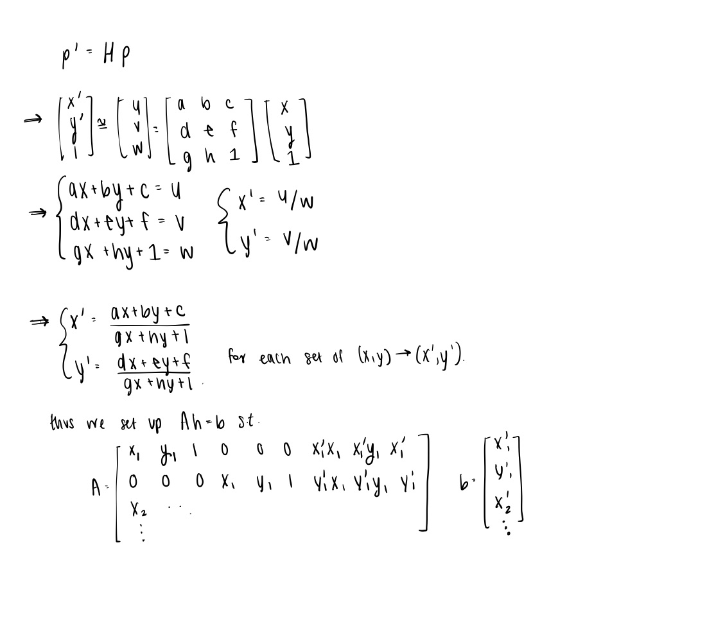
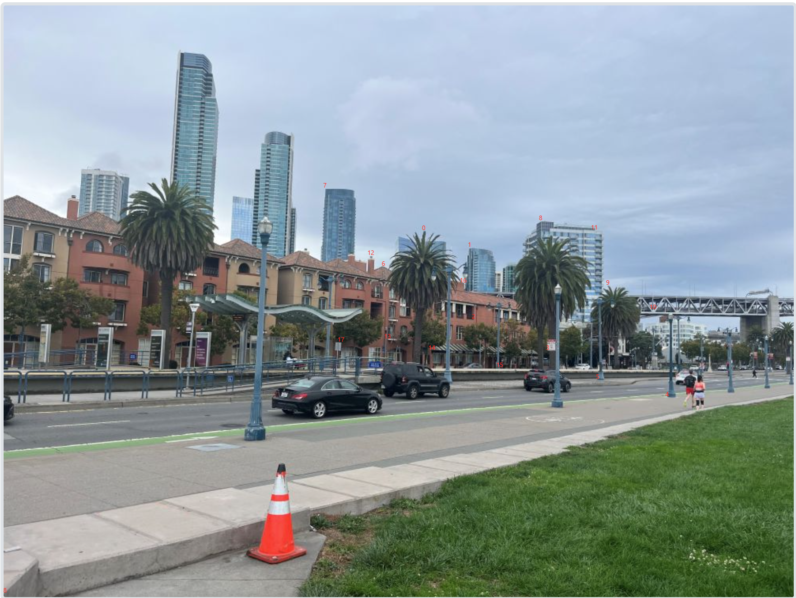
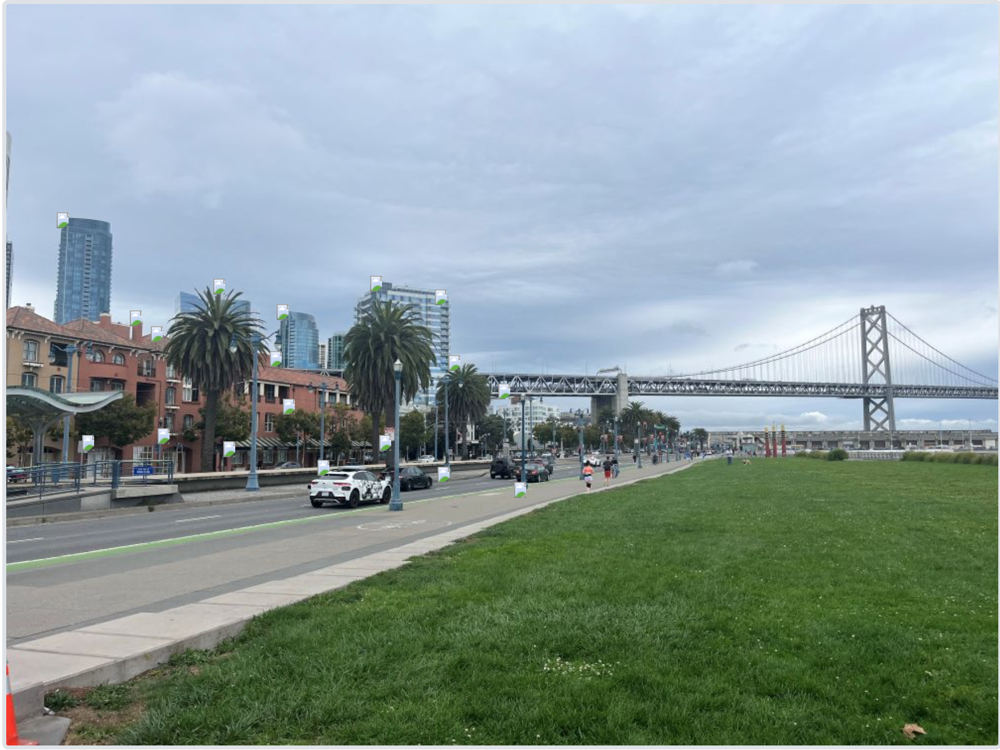
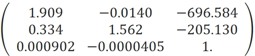
McCone Balcony:


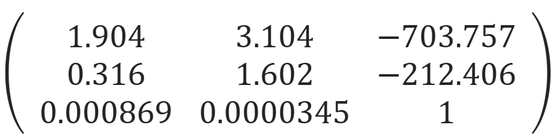
Now that I know the parameters of the homography, I can use this homography to warp each image towards the reference image- lets consider the second image the reference.
First, I pass the corners through a forward pass to determine the boundaries of the final image. With these dimensions known, I can switch to inverse warping to avoid holes in the output image.
To do this, I first apply a gaussian filter to the original image, so points sampled reflect a general neighborhood. Then, with each 'inverse pass', I calculate the source of warped coordinates x', y'. I interpolate to determine the relevant values to assign to x', y'.
For interpolation, I implemented both Nearest Neighbors (NN: Round coordinates to the nearest pixel value) and Bilinear Interpolation (BL: Use weighted average of four neighboring pixels). Only values that pass to x, y coordinates within the bounds of the original photo are assigned to warped coordinates. Thus, during this process, we can create an alpha mask, which simply marks whether each point in the warped image has valid values.
I tested this code and both forms of interpolation by 'rectifying' images with warped squares/rectangles. In all samples below, the results from using NN and BL look very similar. Using NN was usually faster, taking about 75-90% of the time BL took- especially for small images. As the images got larger, the runtimes converged. Overall, it personally didn't feel much faster to use NN even though theoretically the computation is far less. It likely is due to a slower implementation for the overall code that dominated over the speed of the actual interpolation.
Here is how that turned out (original, warped using NN, warped using BL):
Ice_cream Plate, corresponding with a 100x100 pixel square: items that were flat relative to the plate (like the chocolate sauce and fork) transformed pretty clearly, compared to the ice cream, as expected.
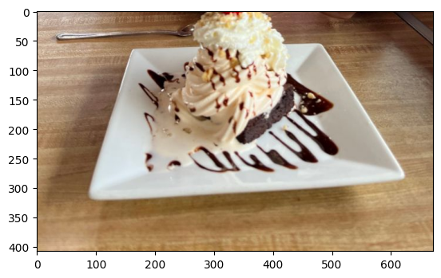
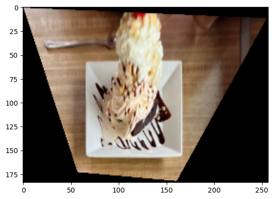
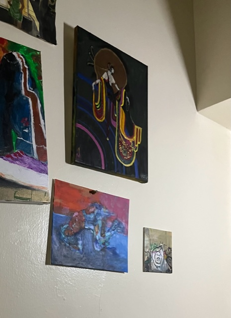
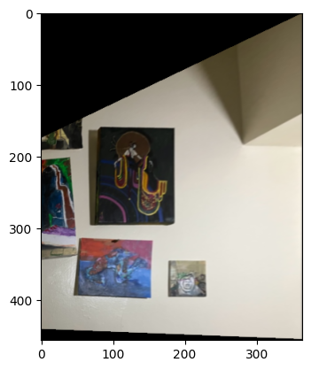
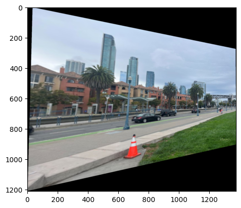
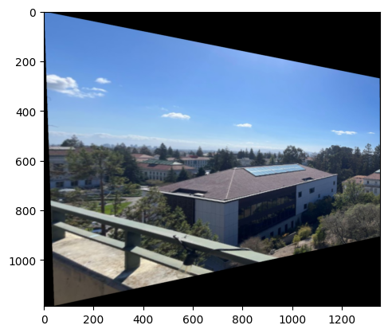
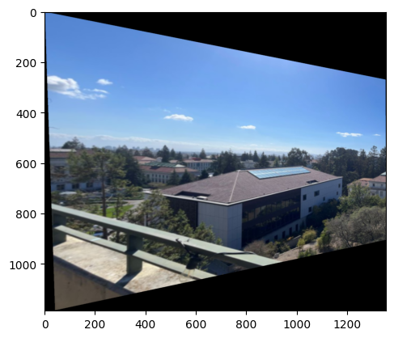
Lets finally blend them together. After sizing a final canvas to fit both images, I can use the alpha masks to blend together the two images. For these images, a weighted average (feathering) with distance 50 px seems to work well enough, so further refinements were not attempted. Here are the final images using BL interpolation!
Golden Gate Bridge:
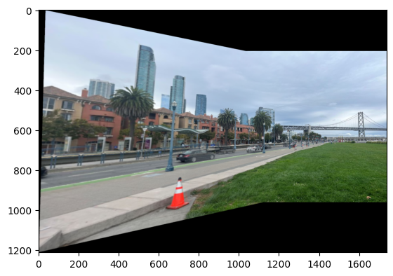
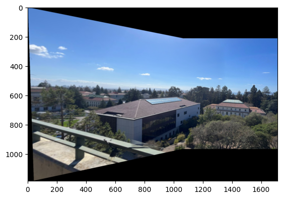

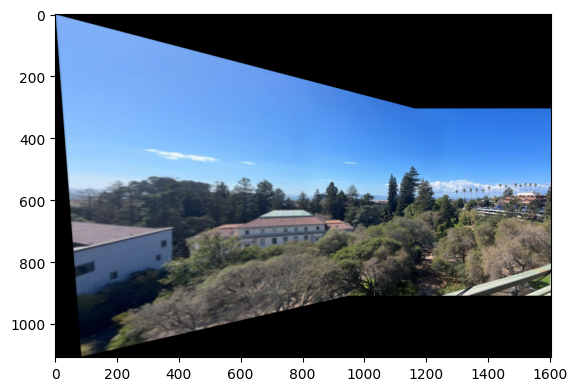
To implement automatically finding correspondences, we first need to identify all corners in the images. We define corners as points where there is a drastic enough change in two directions. To do this, we use Harris Corner detector. To be more selective, we implement Adaptive Non-Maximal Suppression (ANMS), which fitlters out corners within a certain radius of a relative maximal corner. This guaantees that the remaining corners are still spread out evenly about the image.
Here is the code with all the original corners, with 500 selected randomly, and 500 selected with ANMS:
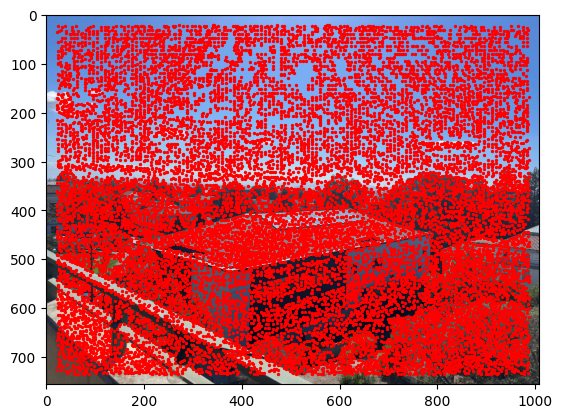
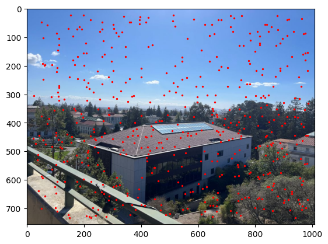
From each of these corners, we extract the feature descriptor by taking an 8x8 box centered around the center. For the sake of comparison we initially sample this over a 40x40 box and bias/gain-normalize the descriptors.
Here is a few example feature descriptors:
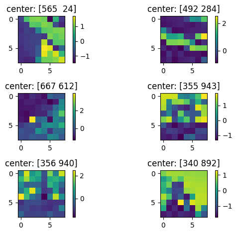
Now we need to find pairs of features that look similar and are thus likely to be good matches. For thresholding, use the simpler approach due to Lowe of thresholding on the ratio between the first and the second nearest neighbors. For each mosaic below, the correspondences found from this are shown in blue.
We use 4-point RANSAC to compute robust homography estimates, with no outliers. For some number of iterations, we select four random points and compute tho homography. We then see how many outliers there are. We choose the set of points with the least outliers is chosen, and the homography is recomputed using least squares with the inliers.
For each mosaic below, the correspondences found from this are shown in red.
Now lets look at these correspondences, and the final mosaics (left), in comparison to the manually matched mosaics (right)
Golden Gate Bridge:
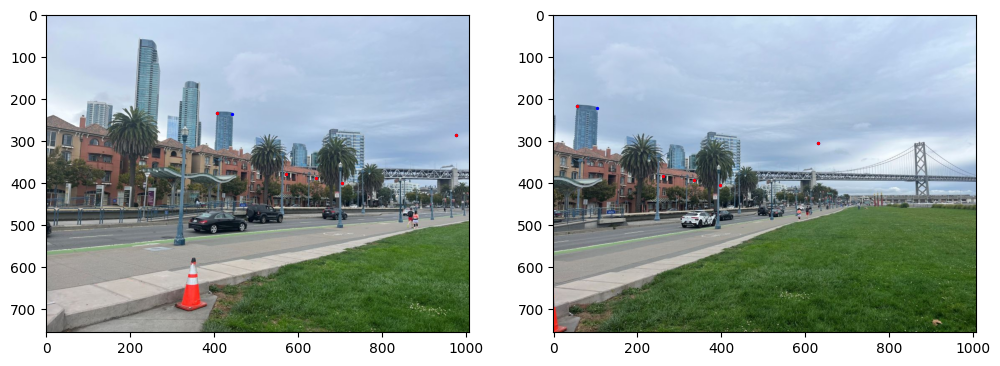
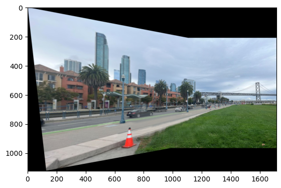
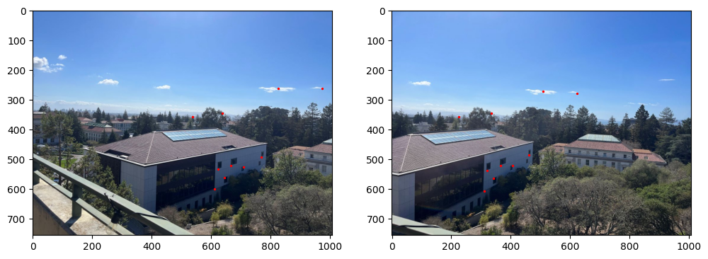
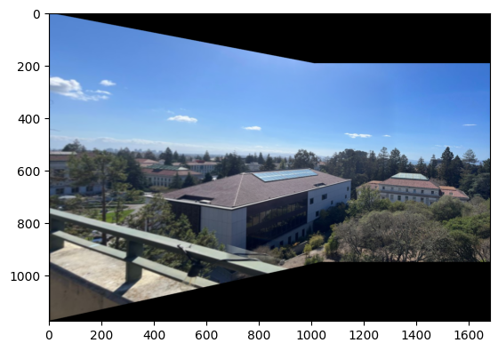
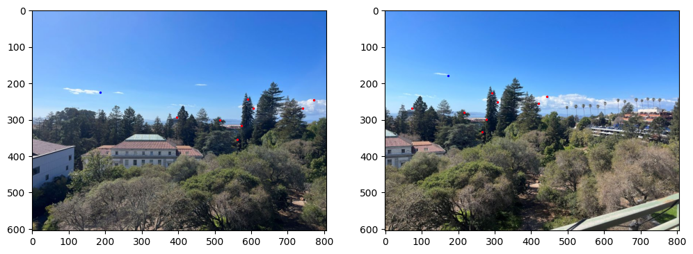
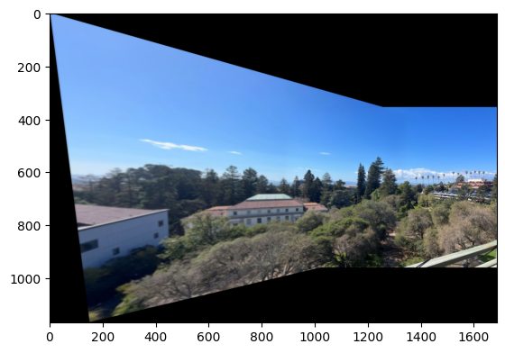